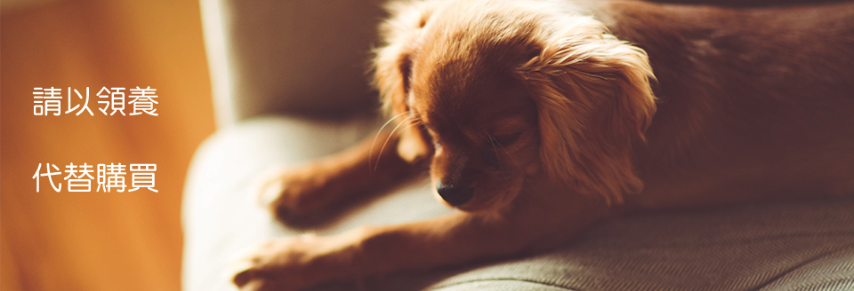
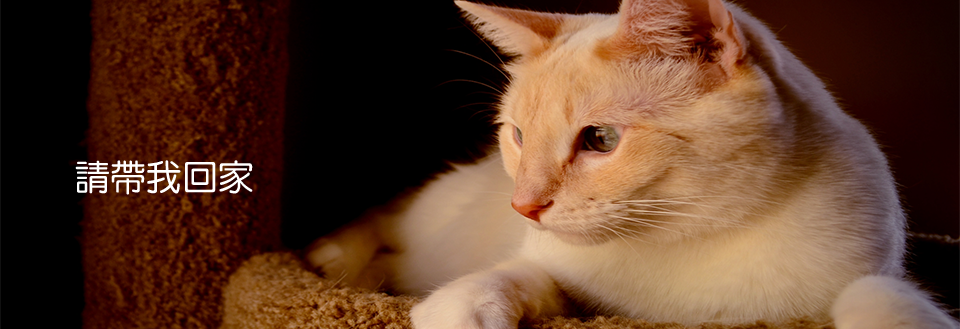
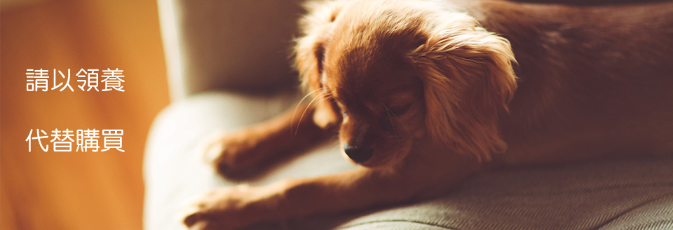
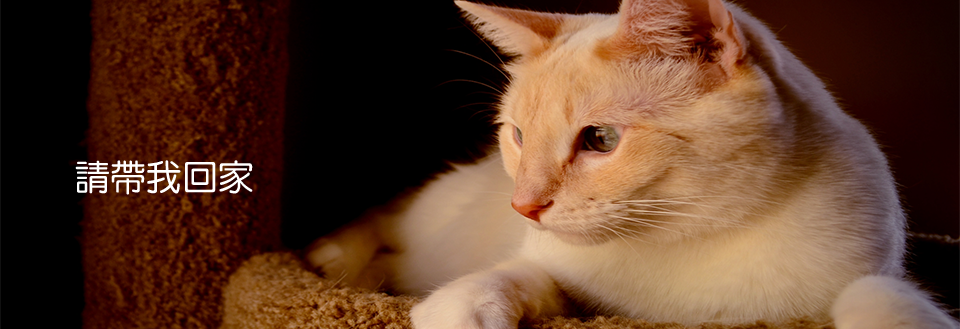

Welcome
農委會表示，以往收容動物十二天後，若無人領養，會比照多數國家作法採以人道撲殺，而台灣最高一年曾撲殺達十萬隻。我們網站成立的目標是希望想擁有寵物的民眾，能夠以領養的方式來代替購買，給牠們有個機會擁有個家。
主打服務
寵物訓練
本收容所有訓練人員會幫助一般民眾事前做好基本訓練，如 : 教導不隨地大小便，出去戶外時不會隨地爆衝或是咬傷民眾...等等。
Johnson
有多年寵物訓練的豐富經驗，以及熱愛動物的心一生無私的奉獻給流浪動物

醫療團隊
有以下醫師們為寵物們看診，收入將轉入本收容所基本開銷。
Doctor Lee
基本資料
普羅動物醫院醫生
醫療資歷 ： 6年
聯絡電話 ：03-4901385
地址 ： 320 桃園縣中壢市中華路一段426號
Doctor James
基本資料
元氣動物醫院醫生
醫療資歷 ： 11年
聯絡電話 ：03-4235328
地址 ： 330桃園市桃園區三民路三段381號
Doctor Anne
基本資料
思邁爾動物醫院中醫生
醫療資歷 ： 3年
聯絡電話 ：03-4237475
地址 ： 320台灣桃園市中壢區環北路562號
領養心得
Miss.黃
當我們與寵物相處久之後，總覺得毛孩子似乎能讀我們的心，在某些時刻總是有特別的默契或貼心的行為，像是心情低落時牠就會來跟你撒嬌或窩在妳身邊靜靜陪伴。
Miss.羅
動物對人類有如此多的回饋及益處，人類要有相對責任做好照顧，並對下一代或社會都要做好〝教育〞的工作，最後別忘了人與動物的關係猶如項圈牽繩的兩端，無論是哪端，都很重要！
Miss.羅
動物對人類有如此多的回饋及益處，人類要有相對責任做好照顧，並對下一代或社會都要做好〝教育〞的工作，最後別忘了人與動物的關係猶如項圈牽繩的兩端，無論是哪端，都很重要！
Miss.羅
動物對人類有如此多的回饋及益處，人類要有相對責任做好照顧，並對下一代或社會都要做好〝教育〞的工作，最後別忘了人與動物的關係猶如項圈牽繩的兩端，無論是哪端，都很重要！
Miss.黃
當我們與寵物相處久之後，總覺得毛孩子似乎能讀我們的心，在某些時刻總是有特別的默契或貼心的行為，像是心情低落時牠就會來跟你撒嬌或窩在妳身邊靜靜陪伴。
Miss.黃
當我們與寵物相處久之後，總覺得毛孩子似乎能讀我們的心，在某些時刻總是有特別的默契或貼心的行為，像是心情低落時牠就會來跟你撒嬌或窩在妳身邊靜靜陪伴。